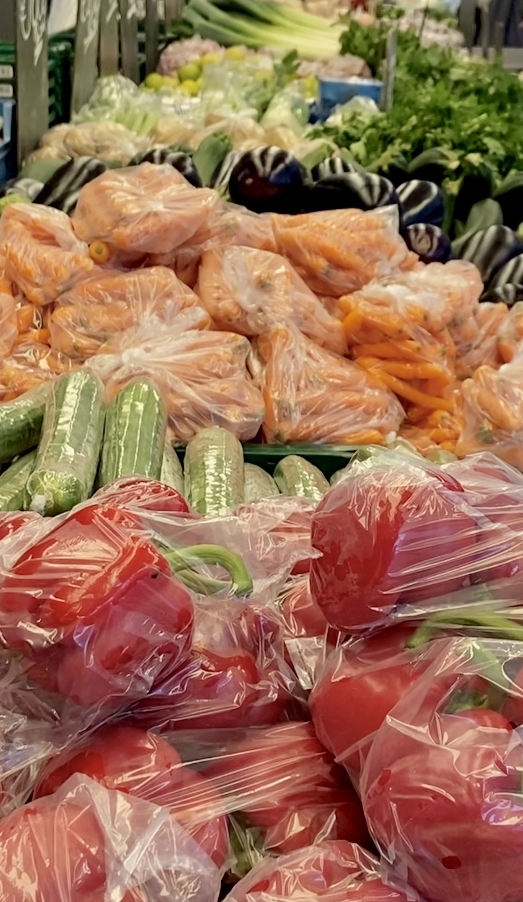
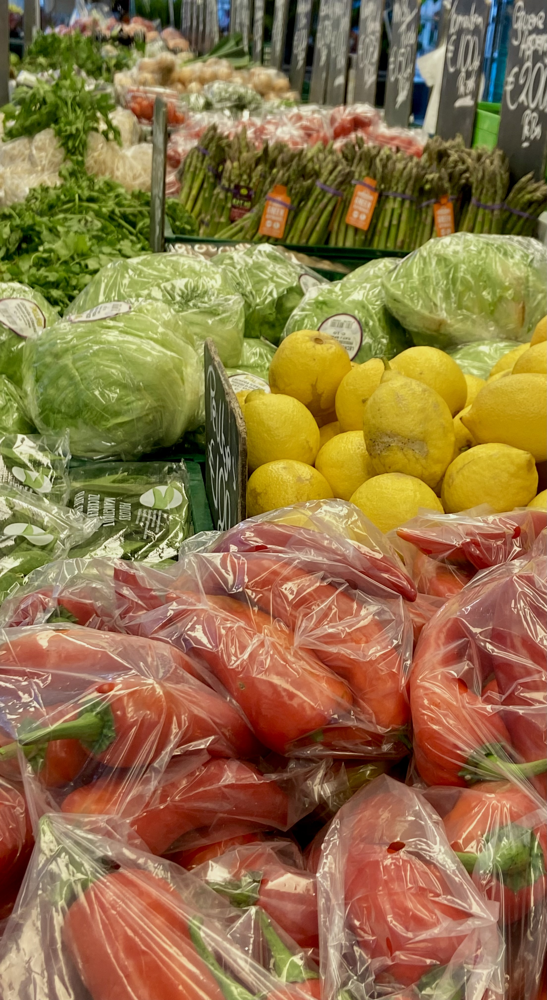

Albert Cuypmarkt
Mo-Sa 09:00-17:00 Su Closed

Said to be the most famous market in the Netherlands, the Albert Cuypmarkt is situated in the popular district De Pijp, close to the canals of Amsterdam. This is also the place where famous singer André Hazes started his career at the age of eight.
Ten Katemarkt
Mo-Sa 09:00-18:00 Su Closed
If you are looking for a convenient market to visit, this is it. This market is located on the Kinkerstraat which you can easily reach by public transport. It offers excellent value fresh fruit and vegetables – along with flowers, cheese, world foods, street snacks, and so on.
Tips for grocery shopping
- Buy products from the lower shelves. These are cheaper
- Buy your fruit and vegetables at the market.
- If you shop at Albert Heijn (AH), don’t forget your bonuscard for discounts.